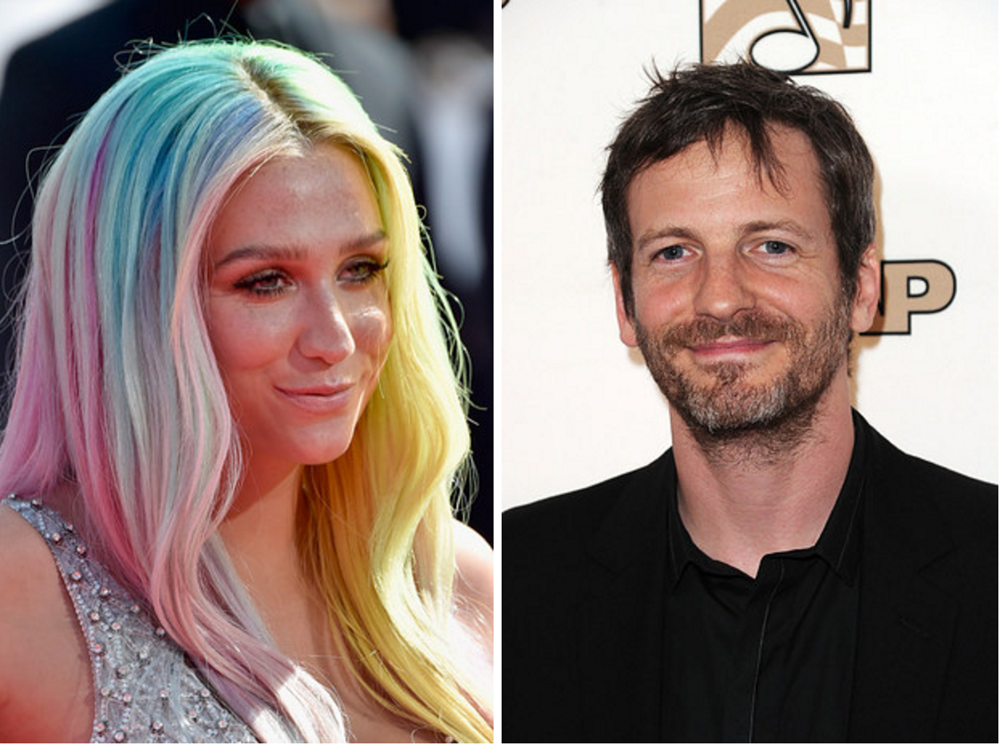
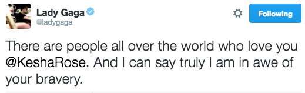
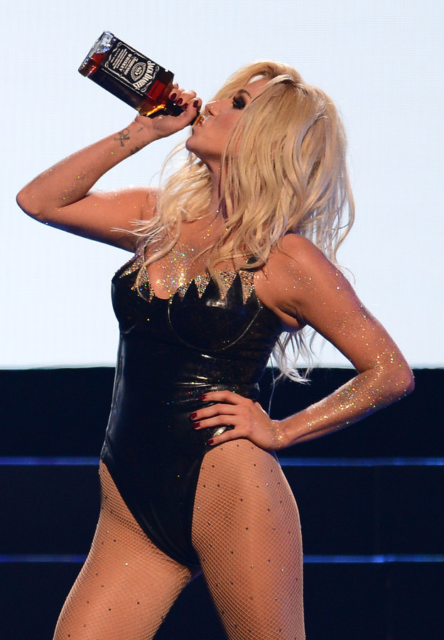
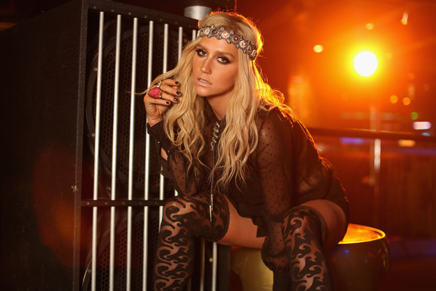
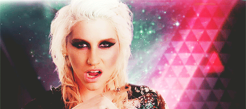

There Are Rumors That Kesha Will Be Performing At Coachella
Please let this be true
By now, you're *PROBABLY* familiar with pop star Kesha's long legal battle with her producer, Dr. Luke.

ICYMI, in February a New York judge denied the pop star's plea to get out of her exclusive contract with the producer, who she alleges sexually and physically abused her for years.
It's all a mess, and fans - both famous and non-famous alike - just want to see the pop star return to recording music.

But on Tuesday, celeb site X17 reported that Kesha is set to make a surprise performance at this weekend's Coachella music festival in Indio, Calif.

However, there was no news on whether Kesha would be performing with another artist or her own surprise set.
While rumors of a surprise Kesha performance are still just that - rumors - a source tells BuzzFeed that Kesha *WILL* be attending Coachella.

But still no word on an actual performance.
Now we just have to hope and pray that she's not just frolicking around in a flower crown...and she actually gets onstage!

Who's ready for Kesh-chella?